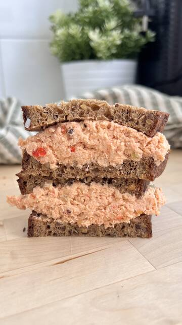

Ricetta · Pranzo · 15 min circa
Sandwich al pollo
Prepara Sandwich al pollo con The Original Protein Bread: una ricetta facile che sarà pronta in circa 15 minuti. Contiene 2 petti di pollo, 1 spicchio d’aglio e mezzo peperone rosso ed è perfetta per un pranzo, una cena leggera o da portare via. The Original Protein Bread apporta 28 g di proteine ogni 100 g.
8 ingredienti4 passaggi15 min circaCon video
 Preparata conThe Original Protein Bread500 gVedi prodotto
Preparata conThe Original Protein Bread500 gVedi prodottoIngredienti
- 2 fette di pane The Original Protein Bread
- 2 petti di pollo
- 1 spicchio d’aglio
- Mezzo peperone rosso
- Sale
- Origano
- 2 cucchiai di yogurt greco
- Erba cipollina
Preparazione
- 01Lessare i petti per 20 min con aglio, peperone, sale e origano
- 02Scolarli e sfilacciarli
- 03Aggiungere yogurt ed erba cipollina
- 04Farcire il sandwich
Riproducendo il video, YouTube può installare cookie. Maggiori informazioni.